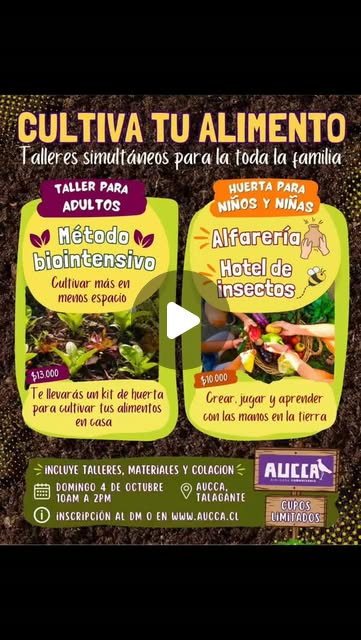

Talleres en Familia
Método Biointensivo para adultos + Alfarería y Hotel de Insectos para niños y niñas
Domingo 4 de octubre · 10:00 a 14:00 hrs · Aucca, Talagante

Jornada de talleres donde seguiremos aprendiendo a cultivar tus propios alimentos y, al mismo tiempo, viviremos una experiencia diferente en familia. Es una jornada de huerta, creación y aprendizaje con las manos en la tierra, con actividades simultáneas para adultos, niños y niñas.
Dos talleres, una experiencia familiar
Al empezar la jornada nos encontraremos para conocernos con una bienvenida, y compartiremos infusiones y jugos naturales que estarán disponibles durante toda la jornada.
Para adultos: "Cultivar más en menos espacio. Método Biointensivo"
Comenzaremos recorriendo Aucca, enfocándonos en distintas tecnologías apropiadas y formas de cultivar de manera eficiente.
Luego aprenderemos los principios del método biointensivo y diseñaremos nuestra huerta de primavera-verano, llevando lo aprendido directamente a la práctica mediante el trasplante en siembra cercana.
Al finalizar, cada participante se llevará un kit de huerta para continuar cultivando en casa.
Valor: $13.000 por persona
Para niños y niñas: Alfarería + Hotel de Insectos
Mientras los adultos trabajan en la huerta, los niños y niñas tendrán su propio espacio de exploración y creación.
Comenzaremos con un taller de alfarería precolombina, para luego salir a la huerta a construir hoteles de insectos y descubrir por qué estos pequeños habitantes son importantes para nuestros cultivos.
Una experiencia para crear, jugar y aprender con las manos en la tierra.
Valor: $10.000 por niño/a
Para cerrar, ambos talleres se encontrarán en la huerta para compartir, conversar sobre lo aprendido e instalar juntos los hoteles de insectos hechos por los niños en las camas de cultivo intervenidas por los adultos. Finalizaremos compartiendo empanadas vegetales y jugo para todos los asistentes.
Programa
- 10:00 – 10:30 Bienvenida, encuentro e inicio de la jornada.
- 10:30 – 11:30 Talleres simultáneos para adultos y niños/as.
- 11:30 – 12:15 Recorrido por Aucca y exploración de experiencias de cultivo.
- 12:15 – 12:30 Bio pausa.
- 12:30 – 13:30 Práctica en la huerta: trasplante mediante siembra cercana / construcción de hoteles de insectos.
- 13:30 – 13:45 Cierre, reflexión y entrega de kits.
- 13:45 – 14:00 Compartir, colación y foto grupal.
Incluye
- Talleres para adultos y niños/as
- Materiales
- Prácticas en la huerta
- Kit de huerta para participantes del taller de adultos
- Empanadas vegetales y jugo
- Una experiencia de aprendizaje en Aucca
Cupos limitados. Cualquier duda: +56 9 8600 0959 (Camilú)